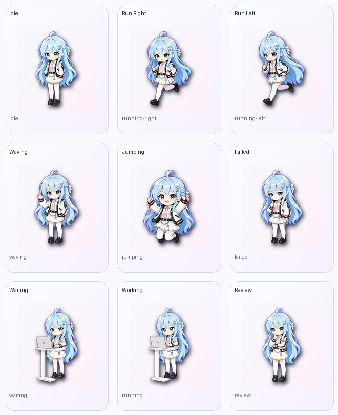
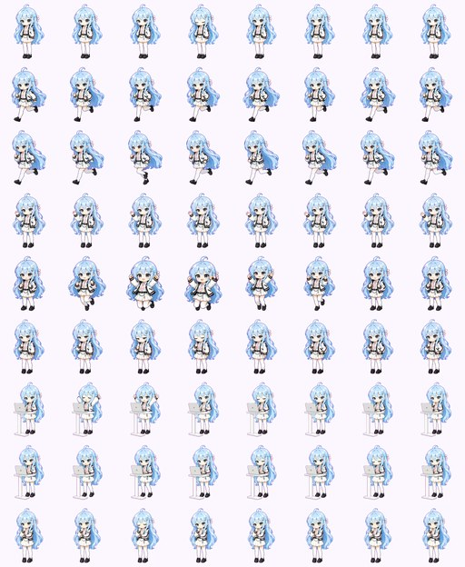

1
Plan the states
Explain the 9-state contract and confirm custom actions before image generation.
Codex Skill + Sprite Toolkit
A repeatable workflow for character planning, state design, sprite strip cleanup, deterministic cutting, and final Codex pet packaging. Lanxi is the reference case.
The final result is not a single illustration. It is a 9-state animated sprite package that Codex can play in different desktop states.


The Skill starts by explaining the states, then asks the user whether each action should use the default behavior or a custom OC-specific behavior.
The details live in the README and guides. This page shows the high-level path from character idea to a verified pet package.
Explain the 9-state contract and confirm custom actions before image generation.
Create a simplified chibi reference with fixed identity details and forbidden changes.
Use smart component detection so hair, props, and wide poses do not leak into neighboring frames.
Compose the 1536 x 1872 atlas, create pet.json, and validate the final package.
The repository includes the Skill entrypoint, scripts, templates, bilingual guides, spacing rules, and a complete Lanxi example package.